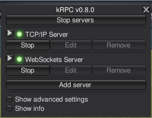
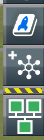
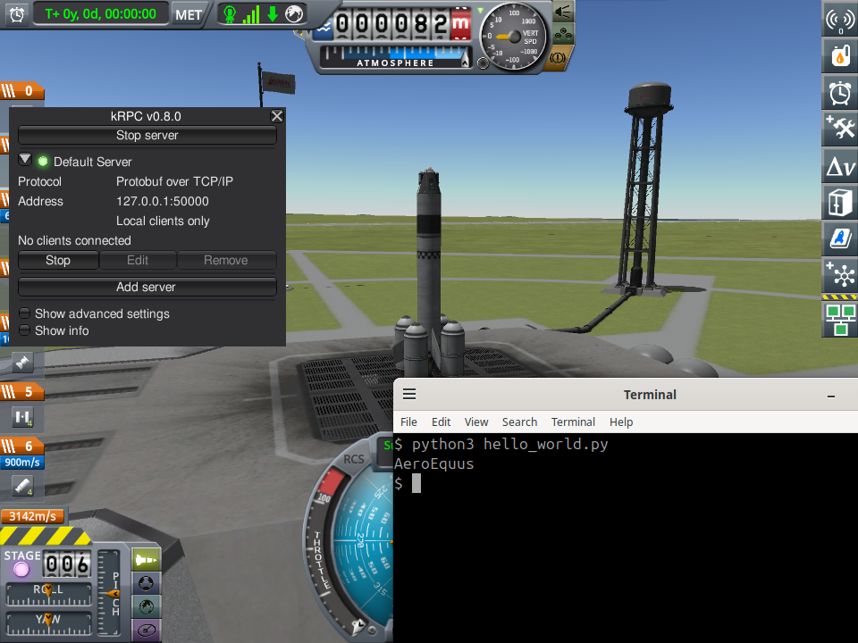

Getting Started#
This guide sets up the kRPC server in the game, then writes a Python script that talks to it.
The Server Plugin#
Installation#
Download kRPC from one of these places:
Copy the
GameDatafolder from the zip into your KSP folder. You can also install kRPC with CKAN.Start KSP and load a save. The server window appears, with two servers: “TCP/IP Server” on port 50000, and “WebSockets Server” on port 50001 for the JavaScript client. The servers start when the game loads, and the light next to each turns green:

Click a server’s name to show or hide its details: the protocol, the address and the connected clients. Its “Stop” and “Start” buttons stop and start it, and “Stop servers” and “Start servers” stop and start them all.
The close button in the top right hides the window. The kRPC button in the toolbar shows and hides it again, and turns green while a server is running:

Configuration#
Stop a server, then click its “Edit” button to change its settings. Click “Save” to keep them:
Protocol: How clients connect. The Python client connects over “Protobuf over TCP/IP”, the default, or “Protobuf over local socket”. Each client guide lists the protocols its client supports.
Address: The address the server listens on. “localhost”, the default, accepts connections from the same machine only. To accept connections over a network, select one of the machine’s addresses, “Any” for all of them, or “Manual” to type one in.
Port: The TCP port, 50000 by default for TCP/IP, 50001 for WebSockets and 50003 for HTTP. Change it only if another program uses that port.
Origins: For WebSockets and HTTP, the web pages on other sites that may connect. See Web Pages and the HTTP guide.
“Show advanced settings” reveals these settings:
Auto-start server: On by default. Starts the servers when the game loads.
Auto-accept new clients: On by default. When off, a pop-up asks whether to allow each new client. A client stops waiting after its handshake timeout, 5 seconds by default, so connect with no handshake timeout to leave time to answer. HTTP requests need no approval.
Confirm disconnecting a client: Asks before the disconnect button next to a client closes its connection.
Pause the server when the game pauses: While the game is paused, calls wait until it resumes.
Debug logging: Writes more detail to the game’s log file,
KSP.log.
The other advanced settings control the performance of the server.
When a service fails to load, for example after another mod updates, a window lists the problems. “Show problems” in the server window opens it again.
The Python Client#
The Python client needs Python 3.10 or later.
On Windows#
Download Python from https://www.python.org/downloads/windows and run the installer.
Install the client from a command prompt:
py -m pip install krpc
On Linux and macOS#
Install Python with your package manager, or from https://www.python.org/downloads.
Install the client into a virtual environment, from a terminal:
python3 -m venv krpc-env source krpc-env/bin/activate pip install krpc
Activate the environment again in each new terminal before you run a script.
‘Hello World’ Script#
With the server running with the default settings, run this script:
import krpc
conn = krpc.connect(name="Hello World")
vessel = conn.space_center.active_vessel
print(vessel.name)
It connects to the server, gets the active vessel and prints its name:

Going Further#
The Python guide covers the client in depth.
The tutorials show more of what kRPC can do.
Clients are also available for C#, C++, C, Java, Lua and JavaScript.
Other languages can call the server over HTTP, or speak its protocol directly.
Ask for help on the kRPC Discord server.